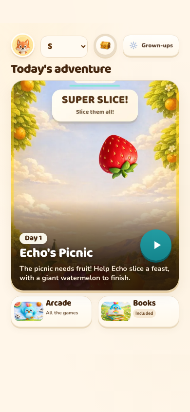
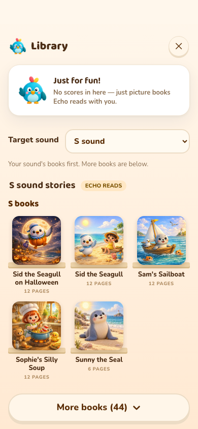
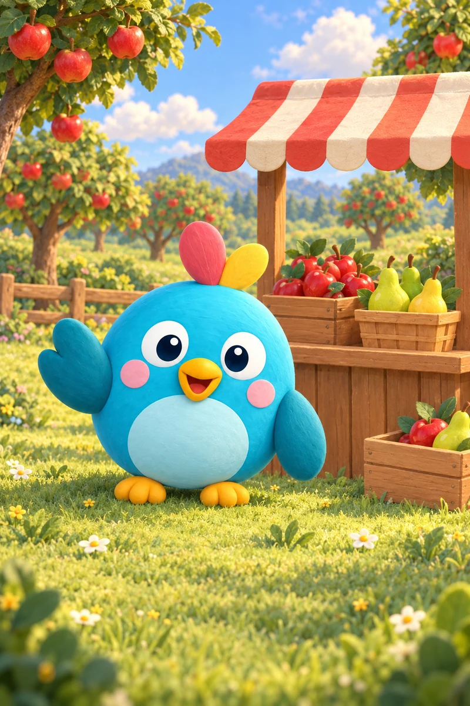
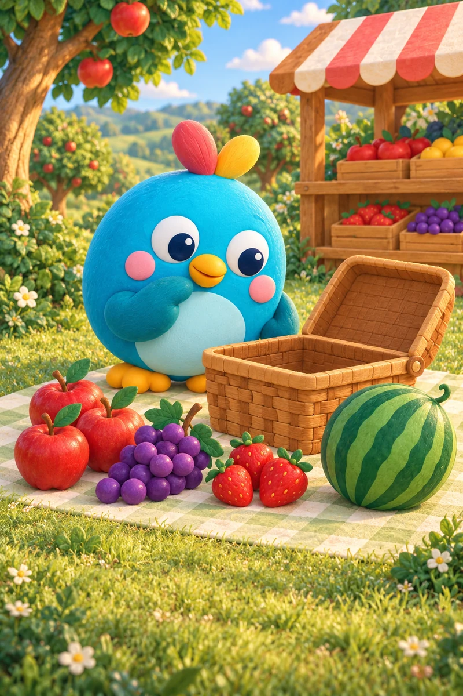
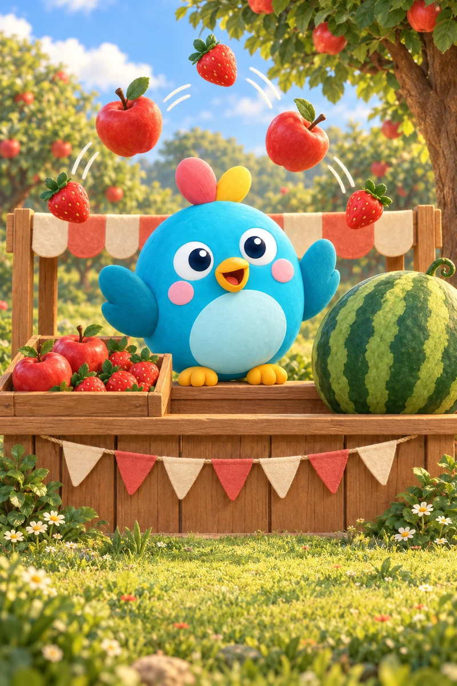
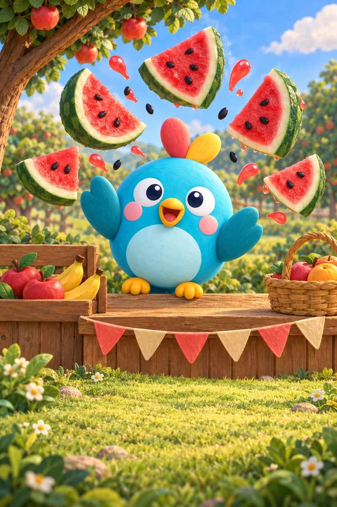
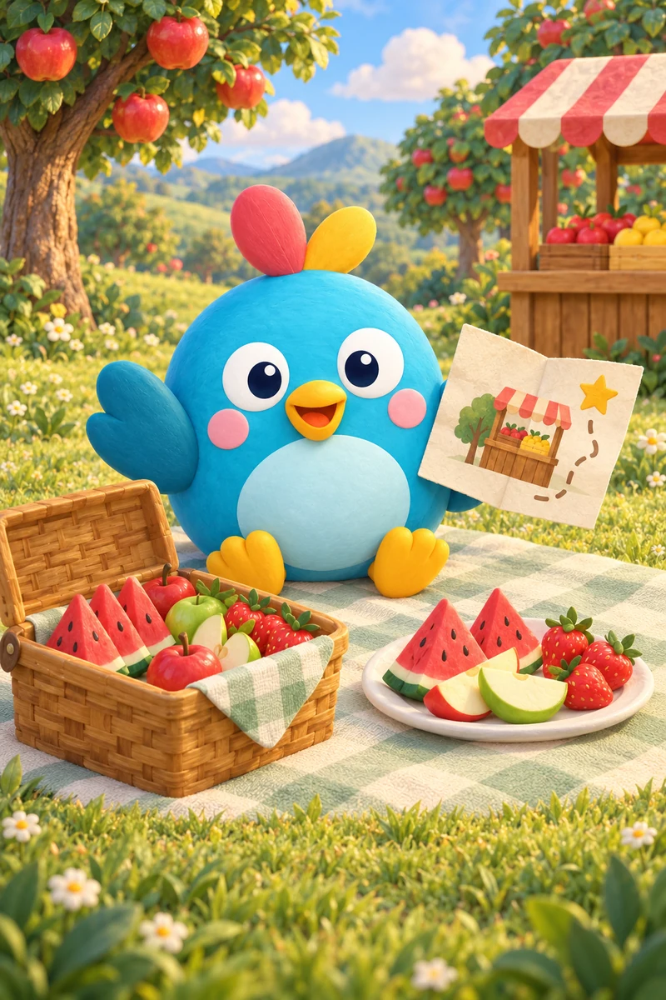
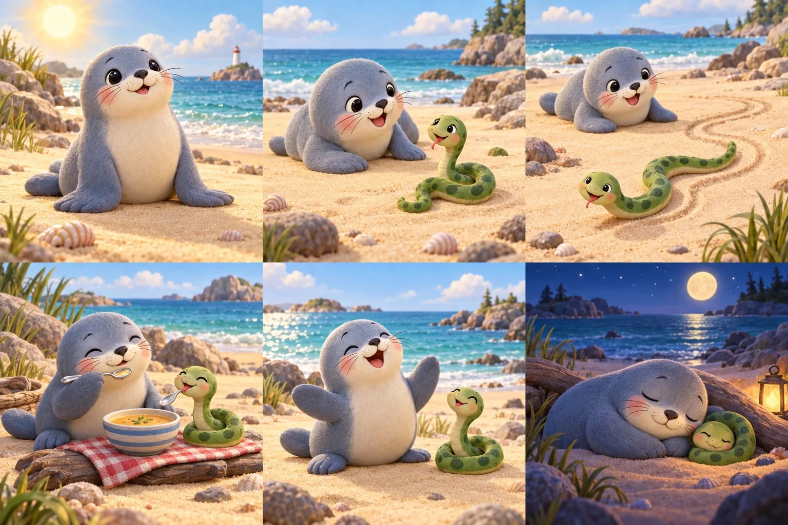
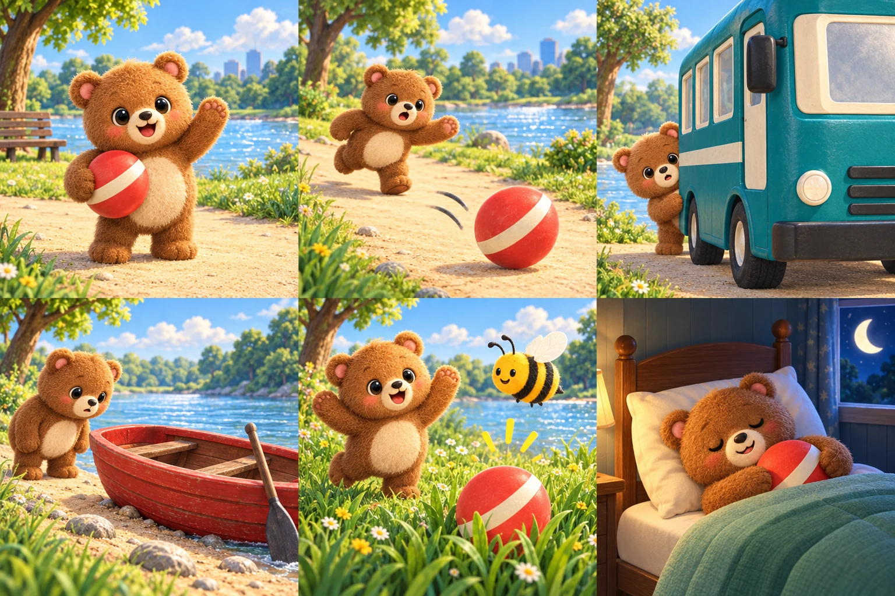

One sound.
A clearer first adventure.
Pick a target sound. Find its books first. Keep Home on one screen. Start a new older child's adventure with Fruit Slice.
This is a review version. It has not been merged or released. Rachel reviews the new book and selected-target behavior before release. Existing sound recordings remain in place.
What families will see


A family can pin one of its selected sounds in Settings, Home or Books. A family that has never pinned a sound keeps the existing practice rotation. A speech therapist's active assignment takes priority. Speech scoring, approved word banks and speech rewards stay as they are.
A complete first Fruit Slice adventure





Three short picture scenes → the existing speaking warm-up → the full Fruit Slice game → an earned picnic ending and one sticker. Losing offers another try. Ordinary Arcade play and replays cannot falsely complete the adventure.
The five new spoken story lines are: “Echo's fruit stand is open. There's fruit for a picnic!” · “The fruit is ready. Let's fill a picnic basket!” · “Slice the flying fruit. Then look out for the giant watermelon!” · “Pop! The giant watermelon burst into juicy pieces!” · “The picnic is ready. A gold star for the fruit stand on our helper map!”
This is the first adventure for newly set-up children aged 5+. Existing families keep their saved order; younger children keep their original first adventure. Flappy Glide remains an option for the next signature adventure after this one has been reviewed.
Original artwork, kept
The existing books keep their original artwork. The new book and picnic illustrations match that established warm, textured three-dimensional style.

One new book: Bear's Lost Ball

A short search with a beginning, problem and happy ending. The six target words—bear, ball, bus, boat, bee and bed—already exist in Sona's initial-B word bank. B previously had only one year-round book, so this adds depth to a thin shelf. The catalog now has 43 year-round books, 49 during October.
| Page | Read aloud | Existing target |
|---|---|---|
| 1 | Bear has a big red ball. | bear |
| 2 | The ball bounces away! | ball |
| 3 | Bear looks by the bus. | bus |
| 4 | Bear looks by the boat. | boat |
| 5 | A bee finds the ball! | bee |
| 6 | Bear takes his ball to bed. | bed |
New artwork was made with the built-in image generator using existing Sona art as the style reference. Book art prompts and final asset names; adventure art prompts. New book assets are public/assets/books/painted/bear-lost-ball-clay-v1{,-cover}.webp. All original book artwork stays unchanged.
Measuring a stronger first session
Source review shows a measurement gap: ordinary Level-1 Fruit Slice and Flappy Glide do not send the same game-open event as the Say & Play games. Compare games only after their start and finish coverage is consistent.
The new signature adventure uses the existing anonymous adventure-opened, ending-watched and day-done events under its own game key. Fruit Slice is the founder's chosen signature game; this review makes no claim that it is a measured retention winner.
To evaluate the first session, measure anonymous starts, real finishes and next-day returns, then connect them to verified subscription state. Game activity alone cannot establish trial cancellations. The legacy in-app “trial started” event is not an Apple subscription trial.
Children's voice recordings
Recommendation: record a small, real-child voice set for Sona's exact existing prompts. Arrange parent-approved commercial app playback rights and have Rachel choose each usable take. No clips have been downloaded, no one has been contacted and no model voice has been replaced.
| Source | What is there | Can it replace the current models? |
|---|---|---|
| JIBO Kids | Pre-K–first grade: letters, digits and conversation. | Best archive lead. Commercial use is described, but edited-clip redistribution in an app still needs confirmation. Its CC-BY release is transcripts only. Letter names are not isolated speech sounds. |
| MyST | Grades 3–5 science conversations. | Commercial licensing is available. Not an isolated-sound pack; negotiate playback rights. |
| SpeechOcean762 | English sentences, including children whose first language is Mandarin. | Commercial download use is described, but it includes pronunciation variation and errors. No verified app-playback terms; not an unchecked model bank. |
| CHILDES / PhonBank | Child-language corpora and phonetic recordings. | Default terms exclude incorporation into commercial products. Case-specific contributor permission is needed. |
| CMU Kids | Ages 6–11 reading sentences. | Research/development and controlled-access terms; not a public playback asset bank. |
| CSLU / OGI Kids | Kindergarten–grade 10, including 200 prompted isolated words. | Closer content fit, but the default agreement is noncommercial research only and bans redistribution outside the research group. A separate OHSU commercial license is mentioned; app-playback terms need confirmation. |
| Google Speech Commands | 35 isolated words; no demographic information was collected. | CC-BY 4.0 allows commercial copying/adaptation with attribution, and contributors agreed to redistribution. No verified child-age subset or guardian metadata, and no isolated phoneme bank. Useful open word audio, not a verified child model-voice set. |
VoiceOverKids is a candidate supplier for a commissioned set. Its talent policy requires guardian involvement. It has not been vetted or contacted. A booking should explicitly cover edited clips, playback in the paid app and website, distribution/caching and future updates.